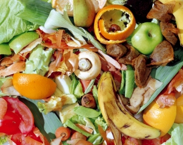

<!DOCTYPE html>
  <html>
  <head>
    <meta charset="utf-8">
    <meta name="viewport" content="initial-scale=1, maximum-scale=1, user-scalable=no, width=device-width">
    <title>Waste2Clean</title>

    <!-- ionic/angularjs scripts -->

    <link href="lib/ionic/css/ionic.min.css" rel="stylesheet">
	 <link href="css/style.css" rel="stylesheet">
    <script src="lib/ionic/js/ionic.bundle.js"></script>

  </head>

  <!-- 
    'starter' is the name of this angular module (js/app.js)
  -->
  <body ng-app="starter" animation="slide-left-right-ios7">

    <!-- 
      The nav bar that will be updated as we navigate between views
      Additional attributes set its look, ion-nav-bar animation and icons
      Icons provided by Ionicons: http://ionicons.com/ 
    -->
<ion-nav-bar class="bar-positive">
  </ion-nav-bar>
    <!-- 
      The views will be rendered in the <ion-nav-view> directive below
      Templates are in the /templates folder (but you could also
      have templates inline in this html file if you'd like).
    -->
    <ion-nav-view></ion-nav-view>

      <script id="intro.html" type="text/ng-template"> 
      <ion-view view-title="Intro">
      <ion-nav-buttons side="left">
          <button class="button  button-clear no-animation"
                  ng-click="startApp()" ng-show="!slideIndex">
            Skip Intro
          </button>
          <button class="button  button-clear no-animation"
                  ng-click="previous()" ng-show="slideIndex > 0">
            Previous
          </button>
        </ion-nav-buttons>
        <ion-nav-buttons side="right"> 
          <button class="button button-clear no-animation"
                  ng-click="next()" ng-show="slideIndex != 2">
            Next
          </button>
          <button class="button button-clear no-animation"
                  ng-click="startApp()" ng-show="slideIndex == 2">
            Start using MyApp
          </button>
        </ion-nav-buttons>
        <ion-slide-box on-slide-changed="slideChanged(index)">
          <ion-slide style="background-color:#e91e63; color:#FFFFFF">
		  <div>
            <h3>Make a Clean India using Waste2Clean</h3>
            <div id="logo">
              
            </div>
            <p>
                W2C (Waste2Clean) to get penny for disposal of waste, In our country, lakh of ton wastages are stored in dumped grounds. It was so poisons to the environment and also people. So by using Android app I have an idea to Segregate this type of wastage and recycle and reuse the product in many ways to become a clean India.
            </p>
                      <button class="button button-positive button-clear no-animation"
                  ng-click="startApp()" ng-show="!slideIndex">
            Skip Intro
          </button>
		  </div>
          </ion-slide>
          <ion-slide style="background-color:#3F51B5; color:#FFFFFF"> 
            <div>
              <h3 style="color:#FFFFFF">Organic Wastage</h3>
              <div id="logo">
                
              </div>
              <p>
                Few synthetic fertilizers can reproduce the benefits of organic compost. Compost naturally buffers alkaline and acidic soils, releases nutrients more slowly than synthetic fertilizers, provides macro- and micro-nutrients not available synthetically and, best of all, costs nothing to make
              </p>
              <button class="button button-positive button-clear no-animation" ng-click="previous()" ng-show="slideIndex > 0">
                Previous
              </button>

              <button class="button button-positive button-clear no-animation" ng-click="next()" ng-show="slideIndex != 2">
                Next
              </button>
              <button class="button button-positive button-clear no-animation"
                  ng-click="startApp()" ng-show="slideIndex == 2">
                Start using MyApp
              </button>
              </div>
          </ion-slide>
          <ion-slide style="background-color:#9C27B0; color:#FFFFFF">
		  <div >
            <h3>Medical Wastages</h3>
            <div id="logo">
              
            </div>
            <p>
              Old prescription bottles can be used to store the little things that are floating all over your bedroom dresser — collar stays, jewelry, ChapSticks, loose buttons. In the kitchen, you can use them to store toothpicks, or restaurant salt and ketchup packets.Prescription bottles also make for a great travel-size container.In the kitchen, you can use them to store toothpicks, or restaurant salt and ketchup packets.
            </p>
		  </div>
          </ion-slide>
        </ion-slide-box>
      </ion-view>
    </script>

    <script id="sign-in.html" type="text/ng-template">
      <ion-view view-title="Sign-In">
        <ion-content>
          <div class="list">
            <label class="item item-input">
              <span class="input-label">Username</span>
              <input type="text" ng-model="user.username">
            </label>
            <label class="item item-input">
              <span class="input-label">Password</span>
              <input type="password" ng-model="user.password">
            </label>
          </div>
          <div class="padding">
            <button class="button button-block button-positive" ng-click="signIn(user)">
              Sign-In
            </button>
            <p class="text-center">
              <a href="#/forgot-password">Forgot password</a>
            </p>
          </div>
        </ion-content>
      </ion-view>
    </script>
     <script id="forgot-password.html" type="text/ng-template">
      <ion-view view-title="Forgot Password">
        <ion-content padding="true">
          <p>You can use your Phone number to get the OTP PIN to reset your password
		  	The PIN will be send to your registered mobile no. It will expire after 15minutes. 
  </p>      
                   <div class="list">
            <label class="item item-input">
              <span class="input-label">Phone</span>
              <input type="text" ng-model="user.phone">
            </label>
          </div>
          <div class="padding">
            <button class="button button-block button-positive" ng-click="getOTP(user)">
              GetOTP 
            </button>

          <p>
            Return to <a href="#/sign-in">Sign-In</a>.
          </p>
        </ion-content
      </ion-view>
    </script>  
    <script id="tabs.html" type="text/ng-template">
      <!-- 
      Create tabs with an icon and label, using the tabs-positive style. 
      Each tab's child <ion-nav-view> directive will have its own 
      navigation history that also transitions its views in and out.
    -->
      <ion-tabs tabs-style="tabs-icon-top" tabs-type="tabs-default">

        <!-- Pets Tab -->
        <ion-tab title="Waste Collection Info" icon="icon ion-home" href="#/tab/pets">
          <ion-nav-view name="pets-tab"></ion-nav-view>
        </ion-tab>

        <!-- Adopt Tab -->
        <ion-tab title="Request to Pick" icon="icon ion-heart" href="#/tab/adopt">
          <ion-nav-view name="adopt-tab"></ion-nav-view>
        </ion-tab>

        <!-- About Tab -->
        <ion-tab title="Garbage Types" icon="icon ion-search" href="#/tab/about">
          <ion-nav-view name="about-tab"></ion-nav-view>
        </ion-tab>
       <!-- Signout Tab -->
          <ion-tab title="Sign-Out" icon="ion-log-out" href="#/sign-in">
          </ion-tab>

      </ion-tabs>
    </script>

    <script id="pet-index.html" type="text/ng-template">

      <ion-view title="'Garbage Information'">
        <ion-content has-header="true" has-tabs="true">

          <ion-list>

            <ion-item ng-repeat="pet in pets" type="item-text-wrap" href="#/tab/pet/{{pet.id}}">
              <h3>{{pet.title}}</h3>
              <p>{{pet.description}}</p>
            </ion-item>

          </ion-list>

        </ion-content>
      </ion-view>

    </script>

    <script id="pet-detail.html" type="text/ng-template">

      <!--
      This template loads for the 'tab.pet-detail' state (app.js)
      'pet' is a $scope variable created in the PetCtrl controller (controllers.js)
      The PetCtrl pulls data from the Pets service (service.js)
      The Pets service returns an array of pet data
    -->
      <ion-view title="{{pet.title}}">
        <ion-content has-header="true" padding="true">
          <p>{{ pet.description }}</p>
          <p><a class="button button-small icon ion-arrow-left-b" href="#/tab/pets"> All Wastages</a></p>
        </ion-content>
      </ion-view>

    </script>

    <script id="adopt.html" type="text/ng-template">

      <!--
      This template loads for the 'tab.adopt' state (app.js)
    -->
      <ion-view title="Request for Pick">
        <ion-content has-header="true" has-tabs="true">
          <div class="list list-inset">
            <label class="item item-input">
              <span class="input-label">Phone</span>
              <input type="text">
            </label>
            <ion-toggle ng-model="requested"
                        ng-change="userRequest(requested)">Garbage bin is Full</ion-toggle>
            <button class="button button-positive button-block">Request Pick</button>
          </div>
           <div class="item item-divider">
              Request Details
            </div>
            <div class="item" ng-repeat="msg in activity">
              {{ msg }}
            </div>
        </ion-content>
      </ion-view>

    </script>

    <script id="about.html" type="text/ng-template">

      <!--
      This template loads for the 'tab.about' state (app.js)
    -->
      <ion-view title="About Waste2Clean">
        <ion-content has-header="true" has-tabs="true" padding="true">
		<div class="card">
             <h3>Make a Clean India using Waste2Clean</h3>
            <div id="logo">
              
            </div>
            <p>
                W2C (Waste2Clean) to get penny for disposal of waste, In our country, lakh of ton wastages are stored in dumped grounds. It was so poisons to the environment and also people. So by using Android app I have an idea to Segregate this type of wastage and recycle and reuse the product in many ways to become a clean India.
            </p>

          <p>
            Developed by Catena.
          </p>
		  </div>
        </ion-content>
      </ion-view>

    </script>

  </body>
</html>

  <script src="js/index.js"></script>

</body>

</html>
